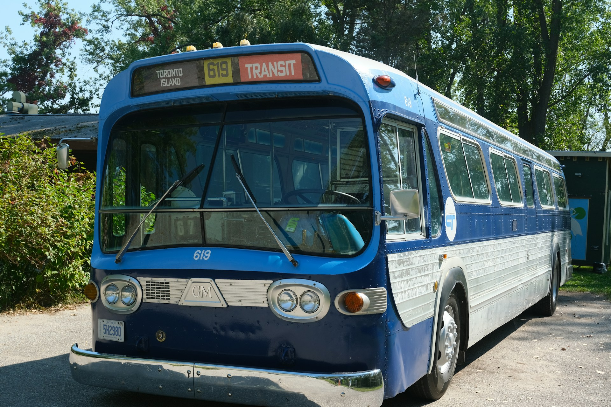

You won't have to worry about travel on this trip
When you step off the plane or ship, you'll have an abundance of options for getting around the island. Those that want to take travel into their own hands (or feet) will find that Taniti is a very walk-friendly island. For those that prefer to travel by car, there are taxis and vehicle rentals available.
Airport
Most visitors arrive in style via Taniti's cozy airport (PTNI). Scheduled flights arrive 3 times per day, but the airport is open 24/7 and private air traffic is common. The airport is nestled just outside Taniti City and is the perfect arrival point for those looking to get right into the thick of their visit.
Free Public Bus
Taniti offers a free public transit system serving Taniti City and the airport daily from 5 AM to 11 PM. Private buses are available for travel around the rest of the island.
Buses arrive at the airport every 30 minutes.
Bicycle
Take in the full sensory beauty of Taniti's landscape at your own pace with convenient bicycle rental shops. Feel the ocean breeze along coastal bike paths, or get an exhilirating adrenaline rush on our inland mountain biking trails.
Bike and helmet rental is available at various locations around Taniti.